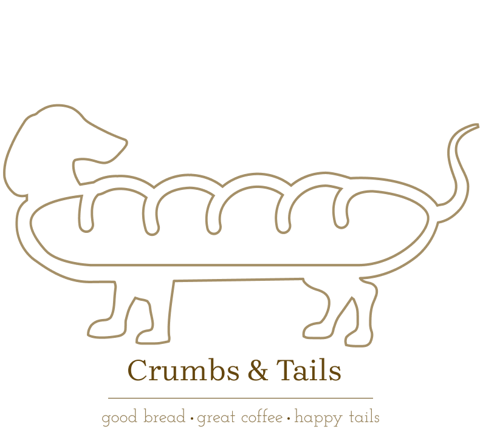

DESIGN PRACTICE
A playful brand identity and packaging concept created for a fictional bakery and coffee shop.

Crumbs & Tails is a fictional bakery and coffee shop created as a self-initiated design exercise. The goal was to create a warm and memorable identity that could work across packaging and everyday brand touchpoints.
I explored a friendly visual direction combining warm colours, simple typography and playful illustration. The identity was designed to feel approachable while remaining clean and consistent across different formats.
This exercise gave me the opportunity to explore branding, packaging and visual consistency outside of a traditional UX project.